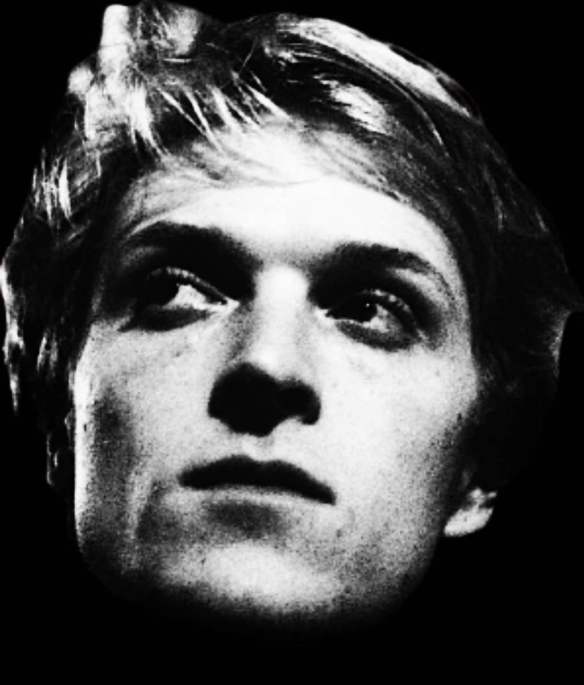

CollinWesterlund
Producer. Songwriter. Multi-instrumentalist. Old-school songs with big harmonies — written, arranged, and produced start to finish, for his own records and for other artists.
Baltimore, MD · Booking gigs & production

About
Collin Westerlund has been playing music since he was a kid. He came up in Baltimore — through its punk scene, through its rap scene — then spent years on the road looking for the right band. What he found instead, after landing in Bentonville, Arkansas, was a town full of players who just needed songs.
So he built the house — literally: half of it became a recording studio, and for a few years he ran a small label out of it, writing, arranging, and producing for singers who didn't yet have a band, a catalog, or a release to their name. The sound leans old school — vocal harmony, clean lyrics, classic pop and soul craftsmanship — music that makes you feel good.
As an artist, he does it all himself: every instrument and every vocal on his debut LP Beautiful World was performed, written, arranged, and produced by Collin. As a producer, he'd rather hand the spotlight to someone else — and that's the work he's building on now, back home in Baltimore, where the new house already has a recording room wired for it.
The Arkansas House Years
In Bentonville, Arkansas, Collin founded Arkansas House Records — a label run out of the living-room studio of his own house, built for the little guy. He wrote the songs, produced the sessions, and gave local singers and players their first releases, aiming the sound at Motown, Gamble & Huff, and the classics in their heyday. The Arkansas Democrat-Gazette profiled the project in 2023.
That chapter is closed — Collin no longer runs the label — but everything he learned producing other people's records came home to Baltimore with him.
Read the Democrat-Gazette profile →